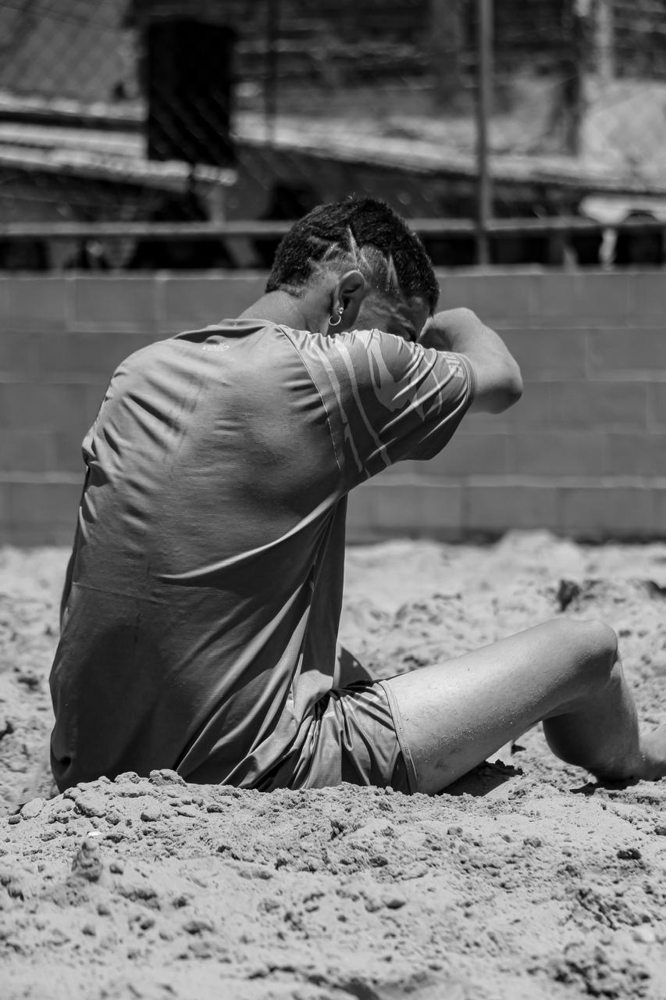
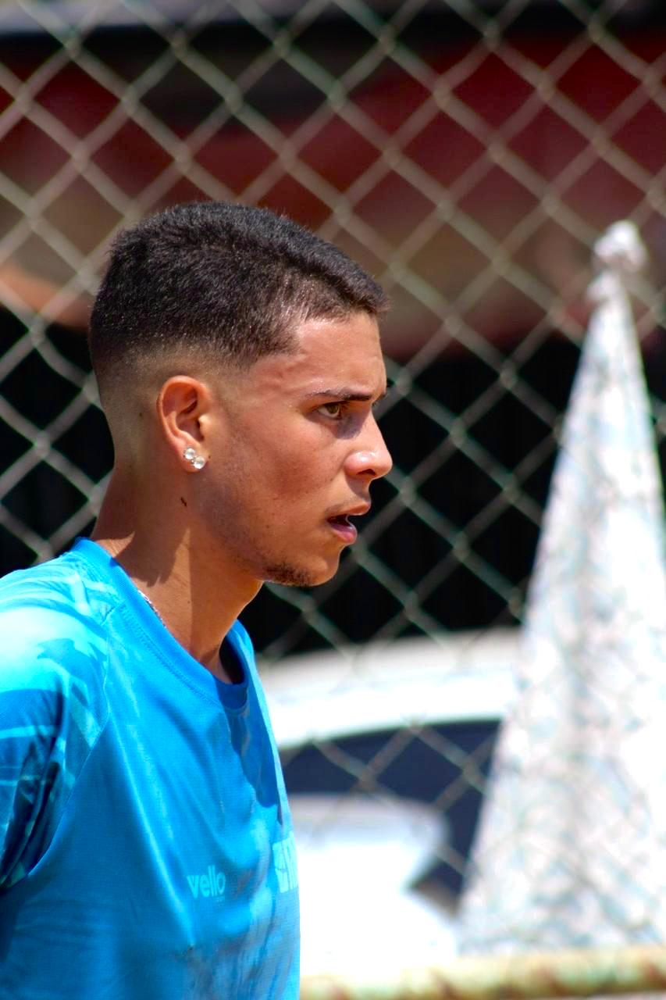
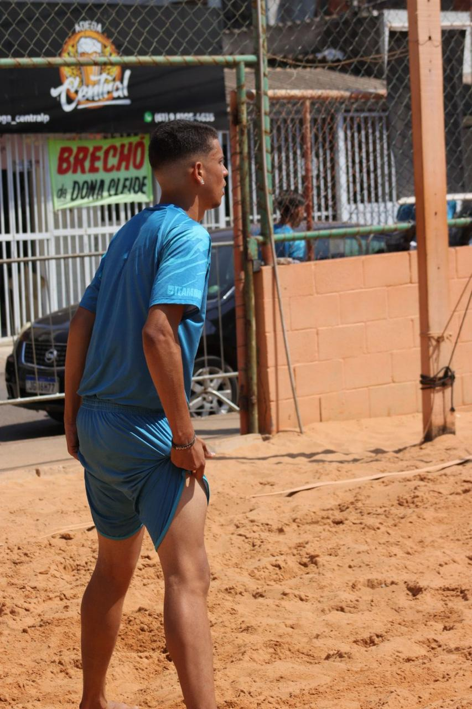
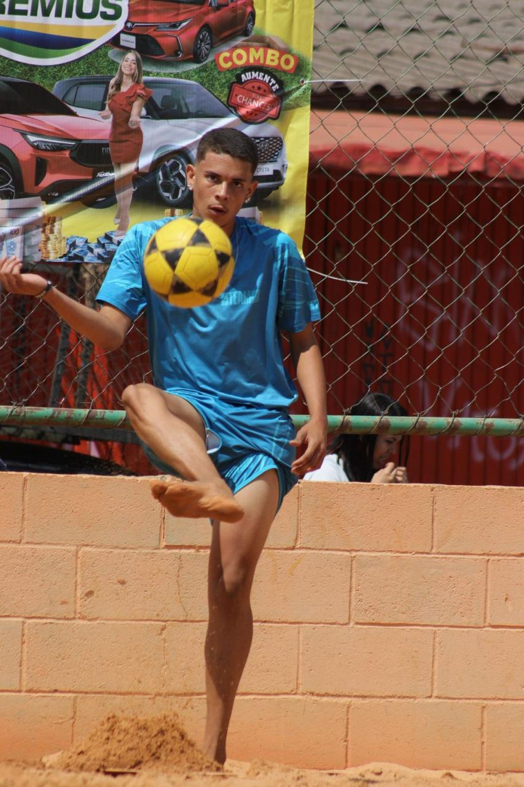
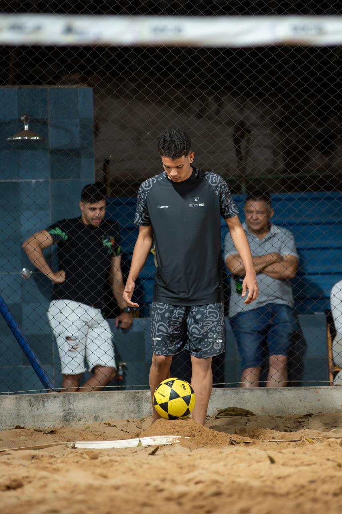
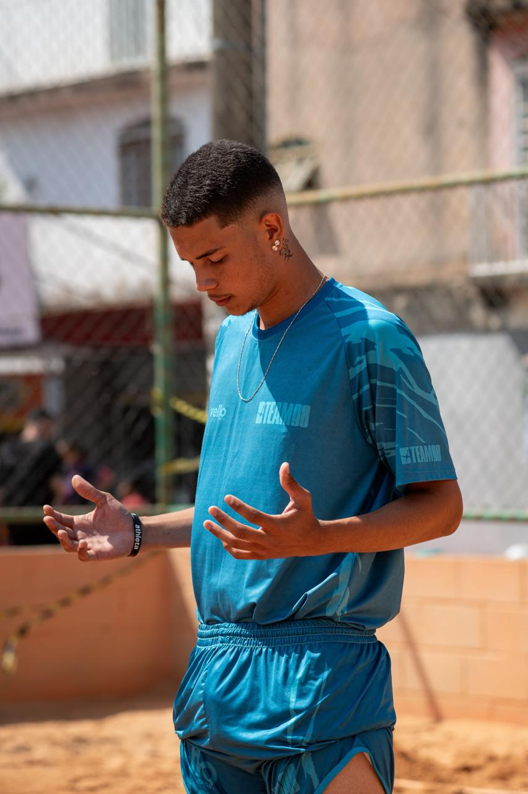

NASCEU NAS PRAIAS
O futvôlei surgiu nas praias do Rio de Janeiro, na década de 1960.
Técnica, habilidade e paixão se encontram na areia. Descubra o universo do futvôlei.
EXPLORAR O ESPORTE ↗
PAIXÃO PELA AREIAO futvôlei é um esporte que combina elementos do futebol e do voleibol. Praticado em uma quadra de areia dividida por uma rede, ele exige técnica, equilíbrio, agilidade e trabalho em equipe.
Surgido nas praias do Rio de Janeiro, o esporte conquistou o Brasil e ganhou espaço em diversos países, tornando-se uma modalidade reconhecida internacionalmente.
Uma história de dedicação, evolução e paixão pelo futvôlei.

A trajetória de Israel Araújo no futvôlei representa uma jornada marcada pela dedicação ao esporte, pela busca constante de evolução e pelo amor à modalidade.
Ao longo de sua caminhada, cada treino, desafio e experiência dentro da quadra representa uma oportunidade de aprendizado e crescimento.
Mais do que competir, sua história busca transmitir a importância da disciplina, da persistência e da paixão pelo futvôlei.
O começo da caminhada e o primeiro contato com o universo do futvôlei.
Desenvolvimento técnico, dedicação aos treinos e aperfeiçoamento das habilidades.
Experiências, aprendizados e novos desafios dentro das quadras.
Novos objetivos, sonhos e oportunidades para continuar crescendo no esporte.
Cada movimento conta uma história. Clique nas imagens para ampliar.




O futvôlei surgiu nas praias do Rio de Janeiro, na década de 1960.
Os jogadores utilizam partes do corpo permitidas pelas regras, como pés, cabeça, peito e coxas.
O futvôlei ultrapassou as fronteiras brasileiras e conquistou praticantes pelo mundo.
O esporte desenvolve coordenação motora, equilíbrio, resistência e agilidade.
Conheça os principais movimentos que fazem a diferença dentro da quadra.
É o movimento responsável por iniciar a disputa de cada ponto.
Consiste em controlar a bola recebida para preparar a próxima jogada.
Prepara a bola para que o parceiro consiga realizar o ataque.
Movimento ofensivo utilizado para direcionar a bola ao campo adversário.
É a capacidade de evitar que a bola toque o chão do próprio campo.
O futvôlei também é palco de grandes disputas, talentos e conquistas.
Disputas entre atletas de diferentes regiões, com destaque para o cenário brasileiro.
Eventos que promovem o encontro de atletas e equipes de diferentes países.
Competições realizadas em arenas e praias, reunindo atletas profissionais e amadores.